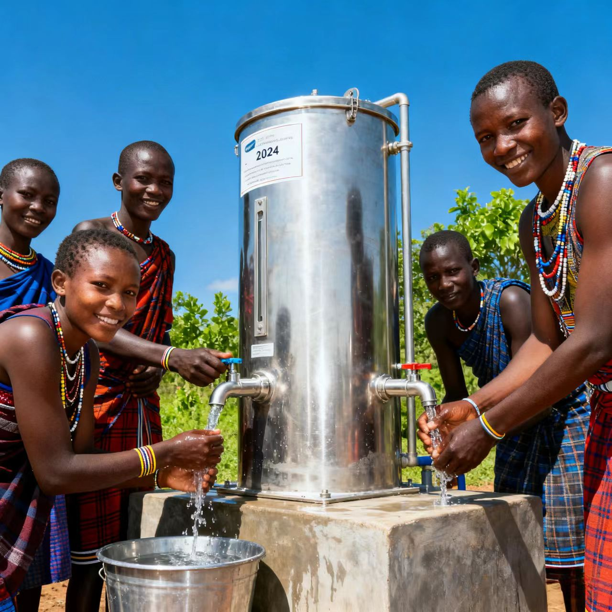
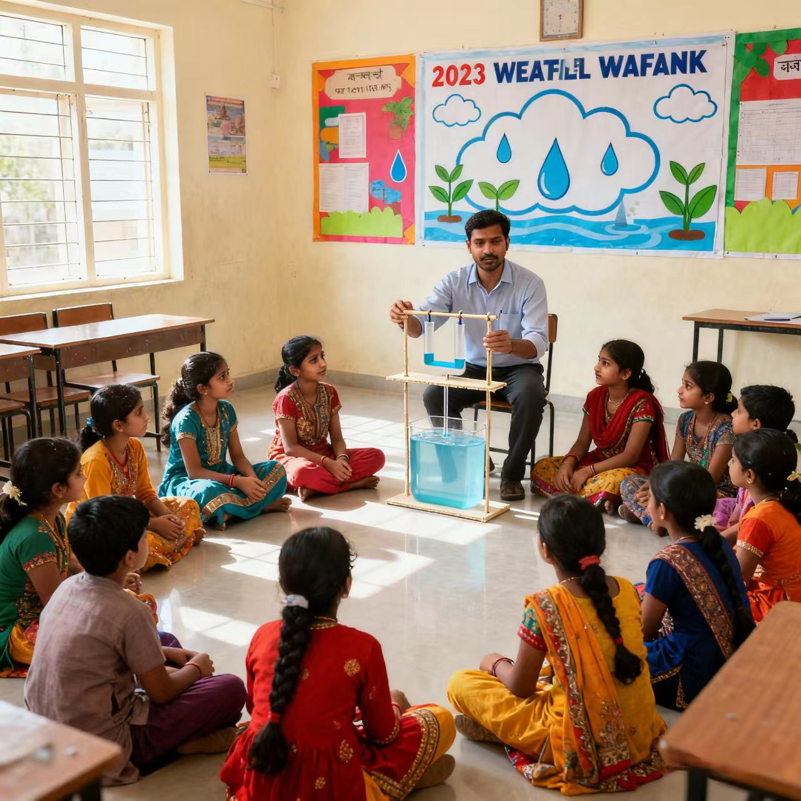
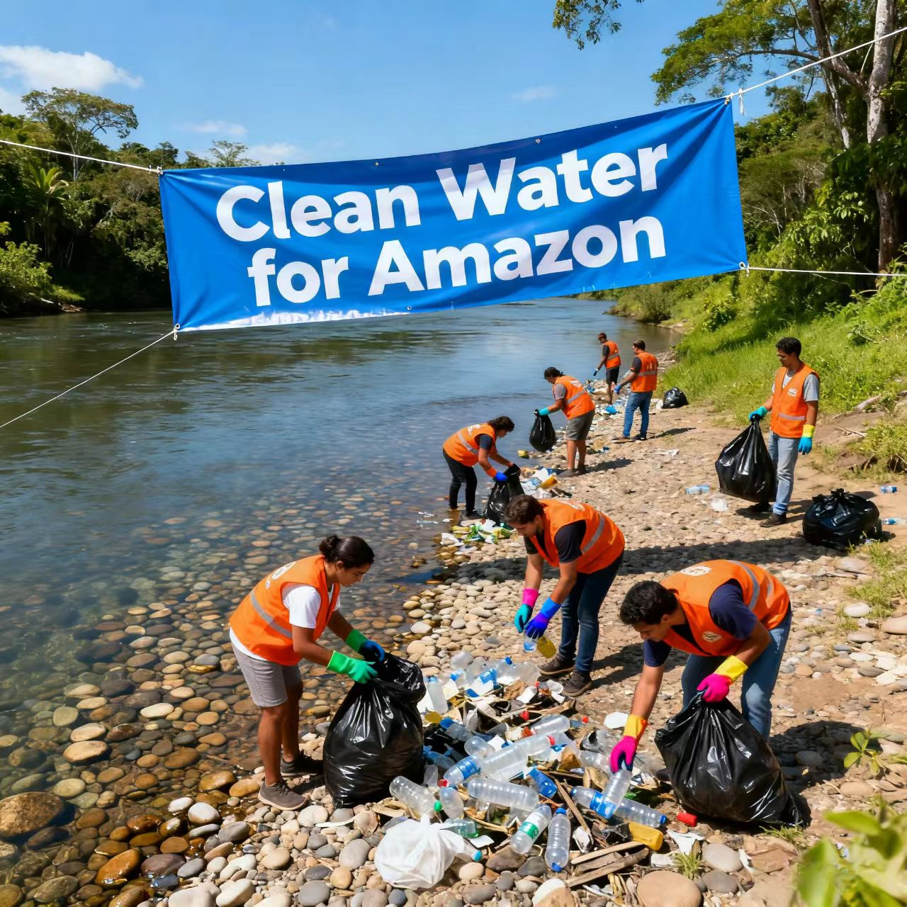
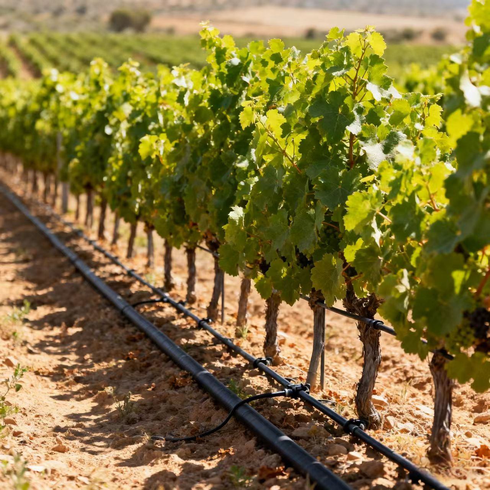
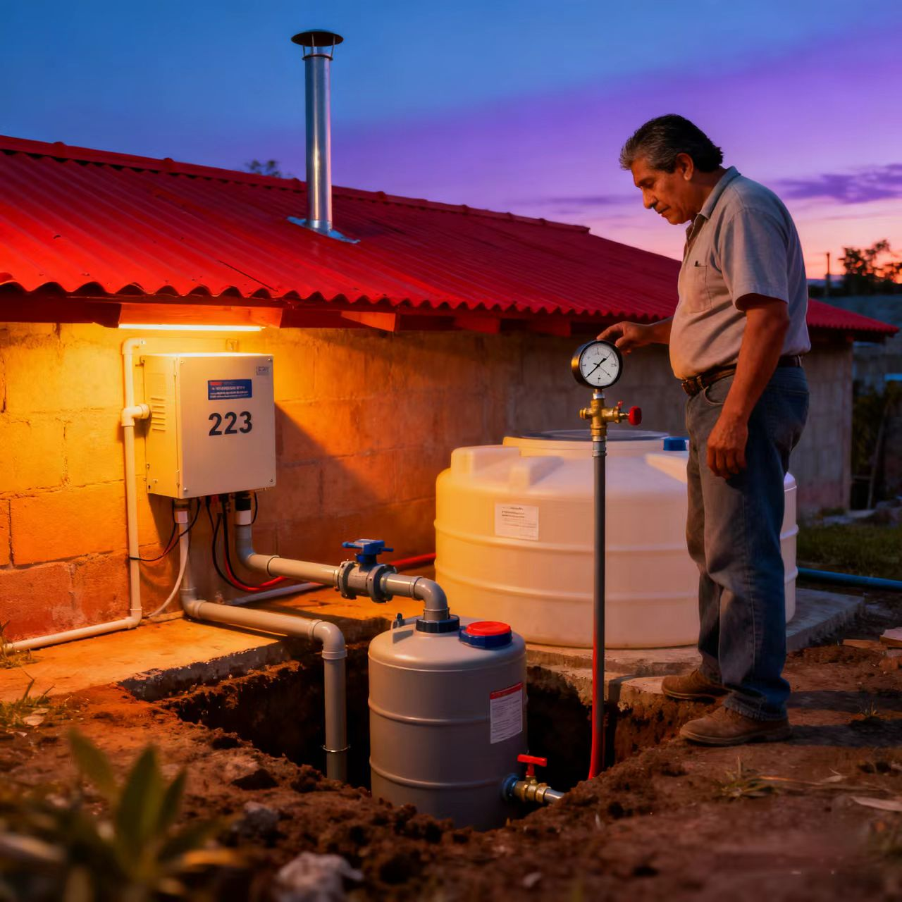
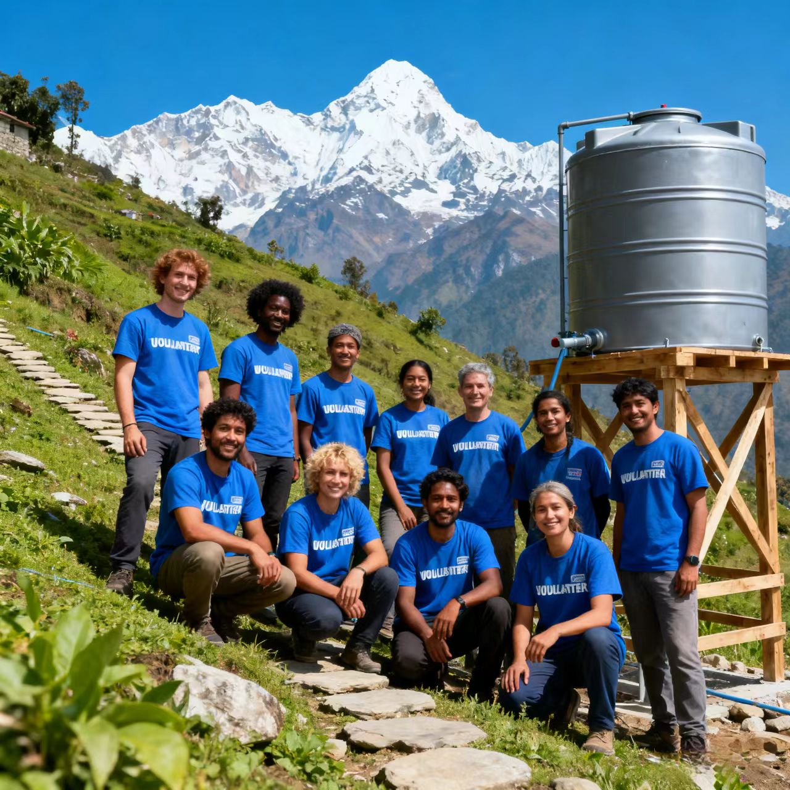

Our Impact in Photos
Explore moments from our water conservation projects around the world. Each photo tells a story of community,
sustainability, and hope—proving that small actions can create lasting change.

Community water purification system (Kenya, 2024)

Water conservation workshop (India, 2023)

River cleanup drive (Brazil, 2024)

Sustainable drip irrigation (Spain, 2023)

Volunteer team at a rural water project (Nepal, 2024)

Rainwater harvesting system (Mexico, 2023)